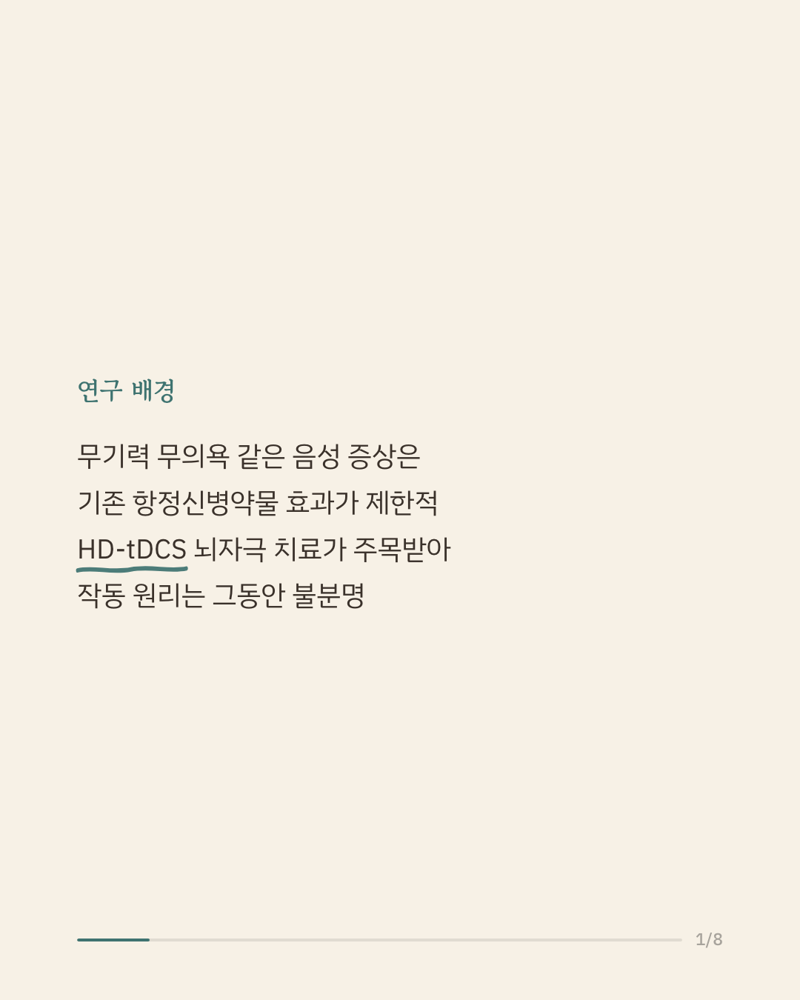
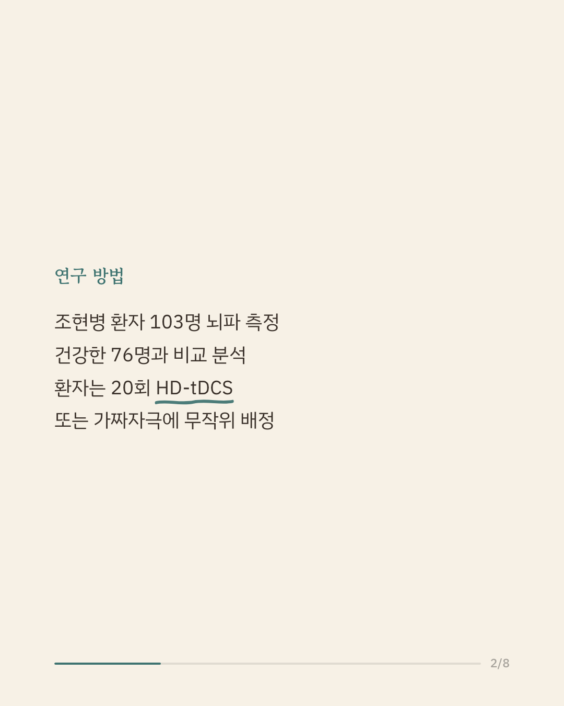
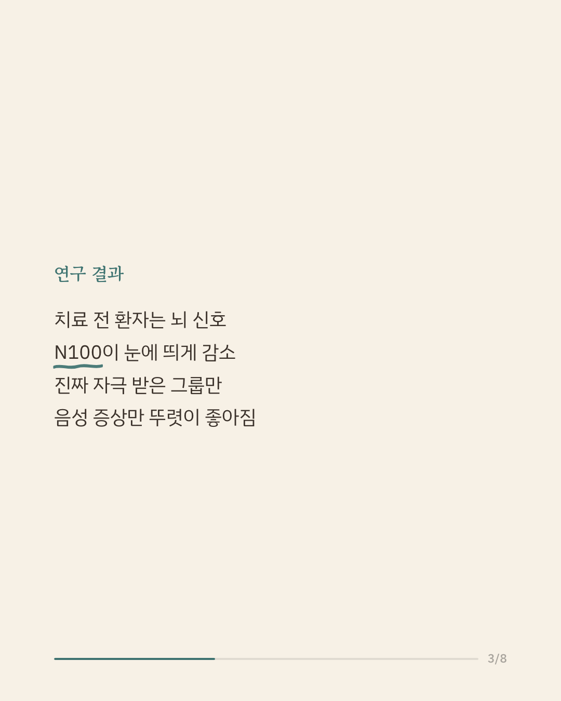
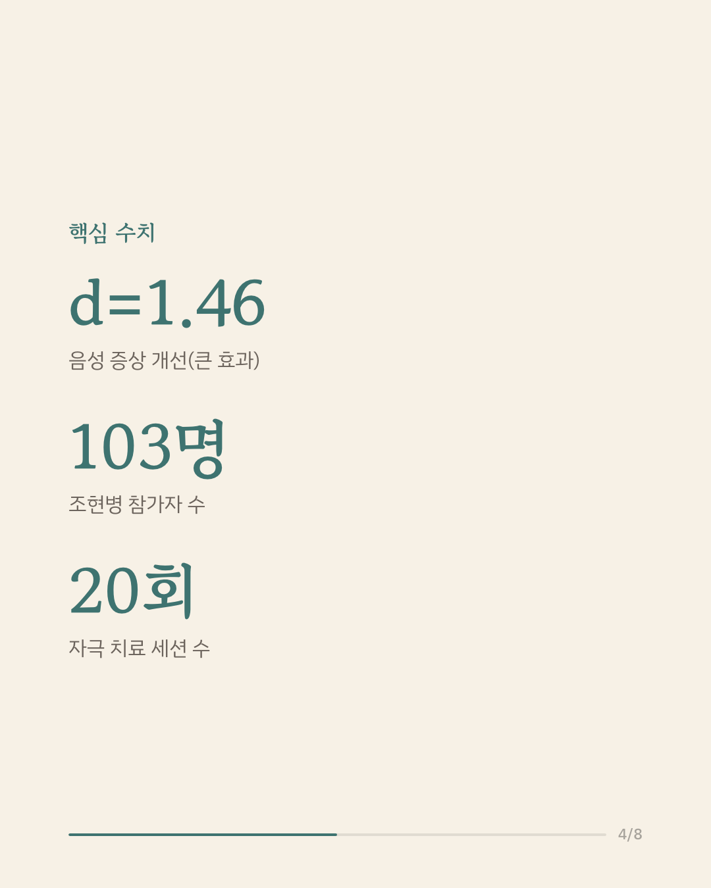
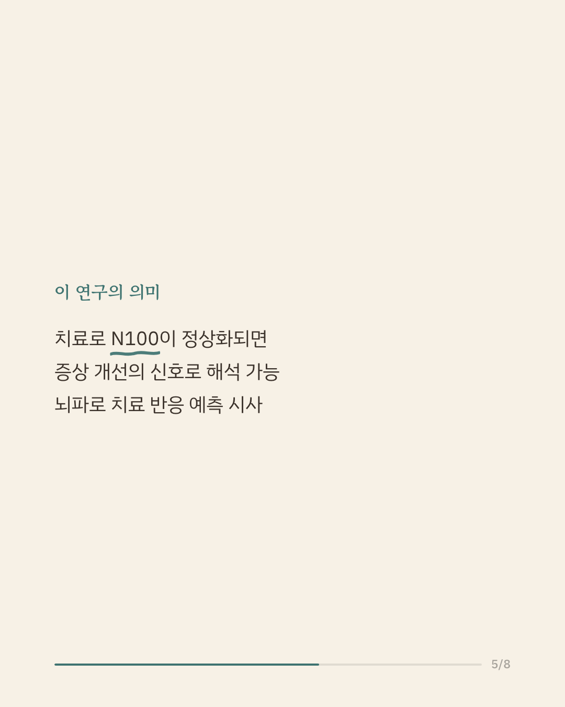
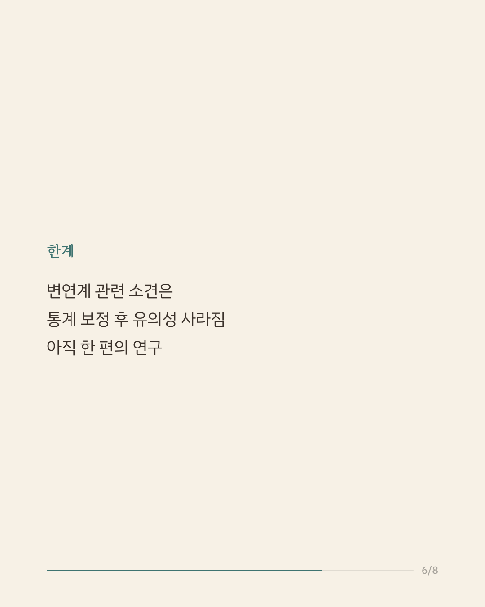
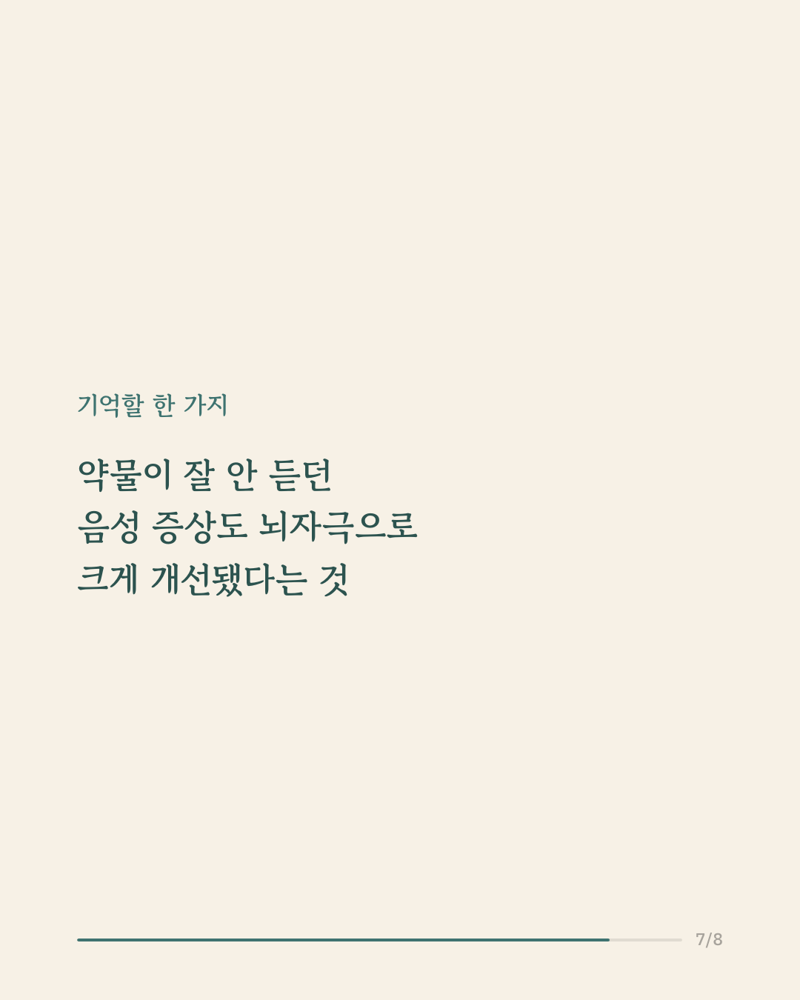
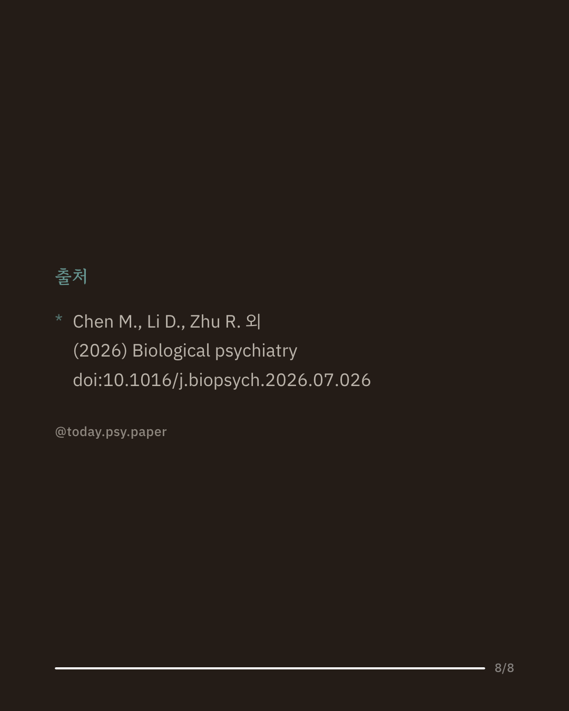

조현병은 약물치료로도 무기력, 의욕 저하 같은 음성 증상이 잘 낫지 않는 경우가 많습니다. 이런 증상은 일상 기능과 삶의 질에 큰 영향을 주지만, 기존 항정신병약물의 효과는 제한적이었습니다. 이번 연구는 조현병 환자 103명을 대상으로 뇌파 검사를 실시하고, 이 중 일부에게 고정밀 경두개직류자극(HD-tDCS)이라는 비침습적 뇌자극 치료를 20회 시행해 그 효과를 살펴봤습니다. 치료 전 환자들은 건강한 사람들보다 N100이라는 뇌파 반응이 뚜렷하게 낮았고, 이는 음성 증상이 심할수록 더 낮아지는 경향과 관련이 있었습니다. 진짜 자극을 받은 그룹은 가짜 자극을 받은 그룹에 비해 음성 증상이 크게 줄었고, 이와 함께 N100도 정상 수준에 가깝게 회복됐습니다. 이 결과는 뇌자극이 정신질환 치료에서 어려운 영역으로 꼽히는 음성 증상에도 도움이 될 수 있으며, N100이 치료 반응을 가늠하는 지표로 쓰일 가능성을 보여줍니다. 다만 일부 뇌 영역 관련 소견은 통계 보정 후에는 유의성이 사라져 추가 검증이 필요합니다. 단일 연구이므로 확대 해석은 조심해야 합니다. 출처: Biological Psychiatry (2026), 'Neurophysiological Signatures of Negative Symptom Improvement After High-Definition Transcranial Direct Current Stimulation: A Transcranial Magnetic Stimulation-Electroencephalography Study' #조현병 #정신건강정보 #임상심리 #뇌과학
python3 publish.py 42705493